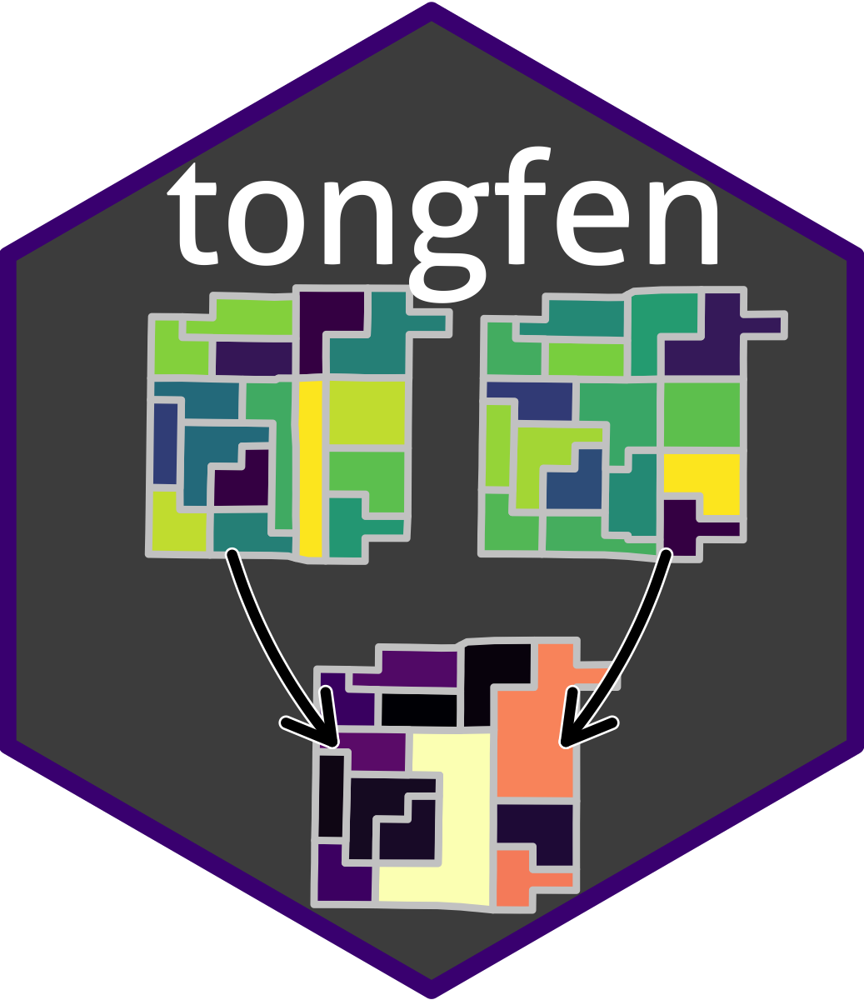

Get StatCan DA or DB level correspondence file
Source:R/tongfen_ca.R
get_single_correspondence_ca_census_for.RdThe correspondence files are downloaded from a mirror of the Statistics Canada correspondence files and cached in the tongfen cache directory. The cached files are checked against the mirror once per session and get downloaded again if they changed. The location of the mirror can be changed via the `tongfen.statcan_correspondence_url` option.
Up to 1996 the smallest census geography were enumeration areas (EA), so the 2001 file links DAs or DBs to 1996 EAs, and the files before that link EAs to EAs, independent of `level`.
Arguments
- year
census year, the correspondence links this year to the previous census, 1981 through 2021
- level
geographic level, DA or DB
- refresh
reload the correspondence files, default is `FALSE`
- links
which version of the links to use, one of "statcan" (the default), "adjusted" or "linkflag". Some of the older correspondence files carry a `LINKFLAG` from an audit of the StatCan links against the geography of the regions, at this point these are the 1991 to 1986 and 1986 to 1981 files. The flag is 0 for StatCan links the audit has no problem with, 1 for StatCan links the geography contradicts, and 2 for links added by the audit for newer regions that are left without a link once the flagged links are dropped. * "statcan" returns the links as supplied by Statistics Canada (flags 0 and 1). * "adjusted" returns the audited links (flags 0 and 2). * "linkflag" returns all links together with the `LINKFLAG` and `LINKREASON` columns.
Files without link flags are returned as is, with a warning if "adjusted" or "linkflag" was requested.
Value
tibble with correspondence table with the identifiers of the regions in both years, named by level and year, e.g. `DAUID2021` and `DAUID2016` or `DAUID2001` and `EAUID1996`, and the `flag` column with the flag from the source file. From 2006 on this is the relationship flag, with values 1 (one new region was one old region), 2 (one new was many old), 3 (many new were one old) and 4 (many new were many old). For 2001 and before it is the part flag, 1 if the older enumeration area corresponds to more than one of the newer regions (more than one DA in 2001) and 0 otherwise. The part flags disagree with the links in a few cases, and refer to the StatCan links, so they don't account for the links dropped or added with `links = "adjusted"`. The "statcan" method only uses the links. With `links = "linkflag"` the table also has the `LINKFLAG` and `LINKREASON` columns, if the file has link flags.